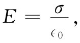

导电体是含有许多“自由”电子的固体。电子能够在 材料中各处自由地运动，但却不能离开其表面。在一块金属中存在那么多的自由电子，以致任何电场都能使它们大量地进行运动。这样所建立的电子电流必须由外界能源不断来维持运动，或者会由于这些电子对那个曾产生初始电场之源放电而停止运动。在“静电”情况下，我们并不考虑连续性电流源（以后学习静磁学时才将考虑到），所以电子仅运动到它们自己被安排得在导体内部处处都产生零场为止（这通常是在远小于1s的时间里发生的）。假如还有任何场存在的话，这个场则应该会推动更多的电子运动，唯一的静电态答案就是场在导体内部处处为零。
现在考虑带电导体的内部 情况（所谓“内部”我们指的就是金属 本身）。由于金属是导体，其内部的场必然为零，即势ϕ的梯度为零。这意思是说，ϕ不会逐点变化。每个导体是一个等势区 ，而它的表面是一个等势面。由于在导电性材料中电场处处为零，所以E的散度也为零，而根据高斯定律在导体内部 的电荷密度一定等于零。
如果在导体中不可能有电荷，那它怎么还能够带电呢？当我们说某一导体“带电”时，其意思到底是指什么呢？电荷在哪里？答案是：它们会存在于导体的表面上，那里有强大的力把它们保持住而不致离开——它们并非完全“自由”的。今后，当我们学习固体物理时将发现，在任何导体上的附加电荷平均来说都位于表面的一两个原子层内。对于我们眼前的目的来说，这样说就已经足够准确，即如果任何电荷被放上或放进 导体之内，它将聚集在表面上，在导体内部没有电荷。
我们也注意到，正好在 导体表面外 的电场必定与表面垂直，不可能有切向分量。假如有切向分量，电子就会沿 表面运动，没有任何力来阻止它们。按另一种方式讲，我们知道，电场线必须始终与等势面成直角。
图5-11 紧贴导体表面的电场与局部面电荷密度成正比
利用高斯定律，我们又可把刚好在导体外面的场强同表面的局部电荷密度联系起来。作为高斯面，我们取一半在面内、一半在面外的一个小柱形盒，如图5-11所示。对于E的总通量的贡献就只有来自导体外的盒子的一边. 于是，贴近导体外表面的场为
在导体外
 （5.8）
式中σ是局部 面电荷密度。
为什么在导体表面上的一片电荷所产生的场会不同于仅仅 一片电荷所产生的场呢？换句话说，为什么式（5.8）是式（5.3）的两倍呢？原因当然是，对于该导体我们并未曾 说过附近没有“其他”电荷。事实上，必然存在一些电荷使得导体里面的E=0. 在表面P点附近的电荷的确给出表面内外两边的场E局部 =σ局部 /2∈0 。但在导体表面上的所有其他电荷“策划”在P点产生一个大小等于E局部 的附加场。使得在内部的总场变成零而外部的场变成2E局部 =σ/∈0 .